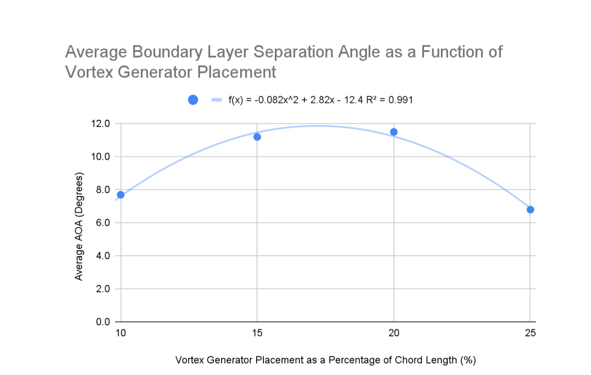

Overview
As part of an independent passion project that later developed into a national science fair entry, I investigated how vortex generator placement and long-gap spacing affected boundary-layer separation on a NACA 2412 airfoil. The profile was selected for its relevance to beginner aircraft such as the Cessna 172. This project was my first experience conducting aerodynamic research and experimentally evaluating passive flow-control devices. I designed and built a low-speed flow-visualization wind tunnel at home using limited materials, with much of the structure constructed from cardboard and hot glue. The tunnel operated at approximately 0.84 m/s and a Reynolds number below 2,300. Without access to formal laboratory facilities or dedicated aerospace mentorship, I developed the experimental apparatus, test procedure, and analysis approach using the resources available to me. I mathematically generated and 3D printed eight 75 mm chord NACA 2412 airfoils, each incorporating a different vortex-generator configuration. I developed a controlled test matrix that compared four chordwise locations, from 10% to 25% chord, and four long-gap spacings, from 2 mm to 5 mm. Smoke visualization was used to observe boundary-layer behaviour as the angle of attack increased, with separation reaching 30% chord used as a consistent stall-proximity criterion. Each configuration was tested across three trials to compare its ability to delay separation. The results indicated that vortex-generator location had a greater effect on separation delay than long-gap spacing. Parabolic regression of the experimental data identified predicted optima of 17.2% chord for placement and 3.6 mm for long-gap spacing, with coefficients of determination above 0.936. The optimized placement increased the predicted separation angle from 6.7 degrees for the control airfoil to 11.8 degrees, representing an approximately 76% improvement. The testing also showed that poorly selected configurations could perform worse than the untreated airfoil, suggesting that vortex generators require deliberate optimization rather than simply being added in greater numbers. Despite the low-cost apparatus and limited resources, the project produced clear experimental trends and progressed from a personal investigation to the Canada-Wide Science Fair (CWSF). It received a Gold Medal and the $500 Second Best Senior Project Award at the Calgary Youth Science Fair. It was then selected as one of 15 projects from approximately 600 entries to advance to CWSF, where it received a Bronze Medal among approximately 350 competing projects.
Tools Used
Pictures



Results
- Placed 2nd Overall for seniors at the Calgary Youth Science Fair (CYSF)
- $500 Cash Prize
- 1 of 15 teams out of ~600 projects displayed selected to advance to the Canada-Wide Science Fair (CWSF)
- Awarded a bronze medal at the CWSF, out of a total of ~350 projects
- Effectively demonstrated the impact of passive flow control techniques
- Effectively visualized the flow around an airfoil at different AOA, given limited resources and knowledge
Challenges + Solutions
- Figuring out how and where to begin, with limited resources and experience
- Designing and Manufacturing a home-made wind tunnel
- Designing and Manufacturing a home-made wind tunnel
- Visualizing airflow within wind tunnel
- Generating enough suction within the wind tunnel
- Designing an effective data acquisition method to measure stall AOA